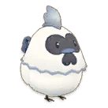
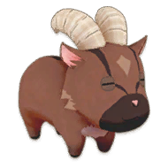

Cuidado animal


En este juego existen 8 tipos de animales, pero en este juego tiene mas variedad en las mascotas, monturas, ganado y gallinas.


Crianza
Aunque aparescan varios animales rondar por las zonas tu granja, solo unos pocos de ellos podrán ser domesticados para unirse a ti como ganado y otros animales son sonlo para fotografia para el museo. Los animales que pueden ser domesticados se consideran ganado, mientras que todos los demás son animales salvajes.
Hay un total de 13 tipos de animales disponibles para domesticar. Para domesticar a un animal, acércate a él y presiona A. Luego, elige trasladar el animal a un granero o gallinero y dale un nombre. El animal se considera manso a partir de ese momento.
Nota: Algunos animales pueden tener condiciones especiales.
Para algunos animales, necesitarás niveles de habilidad en el cuidado de animales antes de poder domesticarlos con éxito.
Amistad
Cada animal del ganado tiene marcadores de corazones de amistad, ubicados dentro de la Sección Animales del menú Relaciones. Cuantos más corazones tenga un animal, mejor será la calidad de los bienes que producirá. Cada corazón de amistad vale 24 puntos. El primer corazón tiene de cero puntos a 24 puntos, el segundo corazón tiene de 25 puntos a 49 puntos y así sucesivamente.
Puedes aumentar tu amistad con tus animales al:
- Hablando con tu ganado
- Alimentación manual (sostenga el alimento e interactue con ellos)
- Utilice los servicios de cuidado de ganado.
- Pastoreo (interactue con la campana para que salgan).
Edificios
Cuanto mas vallas avansando en el juego te iras encontrando con algunas cosas que se encuentran destruidos como: puentes, tronco para cultivar varios hongos y algunos edificios para animales y otros para uso esclusivo de la granja, entre los edificios para animales se encuentra el gallinero y el establo para ganados, cuando los encuentres podras repararlos usando los materiales brutos que has estado encontrando en tu granja y los que has prosesado.
Una vez que consigas reparar los o el edificio podras usarlos para llenarlo de animales, pero para poder hacerlo puedes conseguir los animales simplemente comprandolo en la tienda de animales o los puedes conseguir encontrandolos en estado salvajes en zonas de tu granja y domesticarlos para depositarlo en el edificio correspondiente.
Nota: No todos los animales puedes conseguirlos en la tienda pero si en estado salvaje por lo que si deseas conseguirlos puede consultarlo en el siguiente cuadro.
Puedes conseguir los animales ya sea comprandolo en la tienda o domesticandolo en estado salvajes.
| Animal | Estacion | Aparece |
|---|---|---|
 Gallina |
Todas | Aparece desde el principio en el area 1 |
|  Gallina sedoso |
Todas | Aparece en el area 3 y debes tener nivel 3 en cuidados animales |
 Vaca |
Todas | Aparece desde el principio en el area 2 |
 Vaca marrón |
Otoño | Aparece desde el principio en el area 2 |
 Oveja |
Verano | Aparece desde el principio en el area 1 |
 Cabra |
Otoño | Aparece desde el principio en el area 2 |
 Conejo |
Otoño | Aparece desde el principio en el area 3 |
 Alpaca |
Todas | Aparece desde el principio en el area 3 |
 Búfala |
Invierno | Aparece en el area 2 y debes tener nivel 3 en cuidados animales |
|  Cabra alpina |
Otoño | Aparece en el area 3 y debes tener nivel 5 en cuidados animales |
 Ovejas Suffolk |
Invierno | Aparece en el area 3 y debes tener nivel 7 en cuidados animales |
 Conejo Gris |
Invierno | Aparece en el area 3 y debes tener un nivel alto en cuidados animales |
 Alpaca Marrón |
Primavera | Aparece en el area 3 y debes tener nivel 7 en cuidados animales |